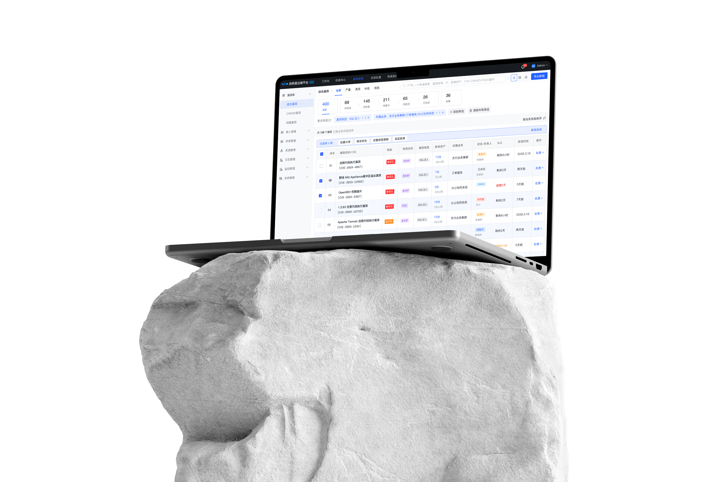

SCROLL TO EXPLORE ↓01 / DISCOVERY
项目背景
理解平台、改版动因与核心体验问题

02 / STRATEGY
体验策略
从问题归因到信息架构与业务路径重构03 / CONFIGURATION
配置体验
布局、表单、交互与设备视觉的全链路优化

04 / MONITORING
监控体验
重构表格、筛选、层级与多维数据展示05 / REVIEW
项目复盘
从结果验证到设计经验沉淀

SCROLL TO EXPLORE ↓01 / DISCOVERY
02 / STRATEGY
03 / CONFIGURATION
04 / MONITORING
05 / REVIEW
· 按 ← → 切换 · 按 ESC 关闭